Cross  インサイドブレイカー Build
インサイドブレイカー Build
Your custom protagonist has access to every weapon and skill branch in the game, which makes Cross capable of becoming an untouchable ground fighter who outdamages even endgame ドール. Following a structured class path means you always have reliable defense and strong melee damage during the story while steadily assembling the pieces for effortless post-game boss kills.
Overview
This build pairs  インサイドブレイカー with five
インサイドブレイカー with five  パーツクラッシャー augments, an エーテル ロングソード, and
パーツクラッシャー augments, an エーテル ロングソード, and  デュアルガン.
デュアルガン.  インサイドブレイカー multiplies all エーテル damage by 2.5x and keeps enemy 部位 intact. Locking onto an intact appendage with five
インサイドブレイカー multiplies all エーテル damage by 2.5x and keeps enemy 部位 intact. Locking onto an intact appendage with five  パーツクラッシャー augments adds a second independent 2.5x multiplier for 6.25x base damage before
パーツクラッシャー augments adds a second independent 2.5x multiplier for 6.25x base damage before  アグレッシブモード or O.C.ギア.
アグレッシブモード or O.C.ギア.
 デュアルガン provide
デュアルガン provide  ゴーストウォーカー, granting フェイクボディ to evade enemy hits while
ゴーストウォーカー, granting フェイクボディ to evade enemy hits while  アグレッシブモード triples melee output. Returning to
アグレッシブモード triples melee output. Returning to  ドリフター after completing the class circuit unlocks 5 Skill Slots.
ドリフター after completing the class circuit unlocks 5 Skill Slots.
Rules
-
インサイドブレイカー unlocks at
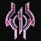
サイシーカー Rank 10. -
Press ZL on the アーツセット and スキルセット screens to refund バトルポイント for a small
 Credits fee. Upgrade active abilities to Lv. 3 first, raise key skills to Lv. 5, and refund retired arts when switching classes.
Credits fee. Upgrade active abilities to Lv. 3 first, raise key skills to Lv. 5, and refund retired arts when switching classes.
- Reaching Rank 10 at the end of a class branch permanently masters its melee and ranged weapons for all classes.
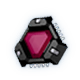
アフィックス /Todo0/0 (0%)
Keep this master checklist handy as you play through the campaign so you always know which class branch to select next and when Cross's quest-locked Signature Arts unlock. Checking off each step in order smoothly transitions your character from starter gear into full エーテル scaling.
- Reach Rank 10 in
 ドリフター, then switch to
ドリフター, then switch to  アサルト.
アサルト. - Reach Rank 10 in アサルト,
 サムライガン, and
サムライガン, and  ジェネラルソード to master ロングソード.
ジェネラルソード to master ロングソード. - Unlock メレデス＆コー after Chapter 4 and invest
 ミラニウム.
ミラニウム. - Reach Rank 10 in
 コマンド,
コマンド,  ソードファング, and
ソードファング, and  フルメタルジャガー to master
フルメタルジャガー to master  デュアルガン and
デュアルガン and  ゴーストウォーカー.
ゴーストウォーカー. - Reach Rank 10 in フォーサー and サイシーカー to unlock インサイドブレイカー.
- Equip an エーテル ロングソード, raise インサイドブレイカー to Lv. 5, unequip Thermal arts, and slot 5x
 パーツクラッシャー.
パーツクラッシャー. - Reach Rank 10 in
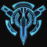
エリートプランナー to unlock ダブルアクセル. - Reach
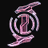
ブラストフェンサー Rank 7 for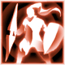
バトルフェンサー and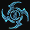
ギャラクシーナイト Rank 5 for スピードギミック.
スピードギミック. - Switch back to ドリフター permanently for 5 Skill Slots.
- Unlock
 偽りなき真心堂 after Chapter 5 and buy Light armor with
偽りなき真心堂 after Chapter 5 and buy Light armor with  潜在力アップ.
潜在力アップ. - Clear
 ブレイドの仕事 after Chapter 5 for
ブレイドの仕事 after Chapter 5 for  ウルトラスラッシュ.
ウルトラスラッシュ. - Clear MIA after Chapter 8 for
 真・旋風刃.
真・旋風刃. - Clear
 仇討 for
仇討 for 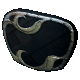
戦国眼帯 or二人の武人 for 覇王の眼帯. - Clear 使命 after Chapter 10 at Lv. 41+ for
 桜花乱舞.
桜花乱舞. - Clear 親和 after Chapter 11 at Lv. 46+ for
 ゼロゼロ.
ゼロゼロ. - Clear 家族団欒 in Chapter 13 Act 2 at Lv. 55+ for ヘラクレスブロウ.
- Farm Lv. 60
 ダイヤスベルト極 or
ダイヤスベルト極 or 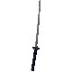
妖刀 葉隠之赤錆 and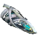
ウルトラネビュラ.
Stages
Jumping straight into endgame skills takes dozens of hours, so these five stages give you a complete, self-sufficient loadout for every stretch of the journey. Read only the stage matching your current class branch and advance to the next card as soon as your class hits Rank 10.
- Equip
 ナイフ and
ナイフ and  アサルトライフル.
アサルトライフル. - Open fights with
 アサルトハンマー to inflict 転倒 and follow with
アサルトハンマー to inflict 転倒 and follow with 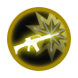
ファイアグレネード. Add スリットエッジ at Rank 4 and fill remaining slots with クロムアーマー, バトルクライ, and リカバリー. - Upgrade アサルトハンマー and ファイアグレネード to Lv. 3.
- Equip dropped gear with
 格闘力 and
格闘力 and 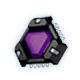
HPMAX, then advance toアサルト at Rank 10.
- Use a 物理 or ヒート ロングソード with アサルトライフル until Stage 4.
- In アサルト, equip ライジングブレイド at Rank 1, プロテクションモード at Rank 2,
 パワードダイブ at Rank 3,
パワードダイブ at Rank 3,  ブレイドサイクロン at Rank 4, and
ブレイドサイクロン at Rank 4, and  ソードマグナム at Rank 8, all upgraded to Lv. 3.
ソードマグナム at Rank 8, all upgraded to Lv. 3. - At サムライガン Rank 1, replace プロテクションモード with
 アグレッシブモード and upgrade it to Lv. 5. Add
アグレッシブモード and upgrade it to Lv. 5. Add 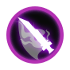
バーニングスラッシュ at Rank 8. - At ジェネラルソード Rank 1, equip
 バーニングソード at Lv. 3. Reaching Rank 10 masters ロングソード.
バーニングソード at Lv. 3. Reaching Rank 10 masters ロングソード. - Run
 スティールボディ until アサルト Rank 7 unlocks マッスルアーム at Lv. 5. Add ヤマトソウル at Lv. 5 at サムライガン Rank 10 and オーラヒール or
スティールボディ until アサルト Rank 7 unlocks マッスルアーム at Lv. 5. Add ヤマトソウル at Lv. 5 at サムライガン Rank 10 and オーラヒール or 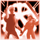
グランドマーチ at Lv. 3. - Level サクラバ重工 for
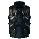
バトルベスト and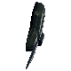
バトルバイザー. Unlock メレデス＆コー after Chapter 4 and investミラニウム to prepare an エーテル sword.
- Open 装備変更 at コマンド Rank 1, equip your mastered ロングソード with デュアルガン, and refund BP from アサルトライフル arts.
- Add
 スライドバースト at コマンド Rank 2 and バイオレンスガンズ at ソードファング Rank 3, both at Lv. 3. Equip
スライドバースト at コマンド Rank 2 and バイオレンスガンズ at ソードファング Rank 3, both at Lv. 3. Equip  クロスリロード at Lv. 5 at ソードファング Rank 8 and ゴーストウォーカー at Lv. 5 at フルメタルジャガー Rank 2.
クロスリロード at Lv. 5 at ソードファング Rank 8 and ゴーストウォーカー at Lv. 5 at フルメタルジャガー Rank 2. - Keep ヤマトソウル and マッスルアーム active, optionally adding
 ハウンドドッグ at ソードファング Rank 10 for +10s O.C.ギア. Reaching フルメタルジャガー Rank 10 masters デュアルガン.
ハウンドドッグ at ソードファング Rank 10 for +10s O.C.ギア. Reaching フルメタルジャガー Rank 10 masters デュアルガン.
- Re-equip ロングソード and デュアルガン in フォーサー. Unlock マインドシーク at フォーサー Rank 2, インサイドブレイカー at サイシーカー Rank 10, and ダブルアクセル at Lv. 5 at エリートプランナー Rank 10.
- At サイシーカー Rank 10, equip インサイドブレイカー and raise it directly to Lv. 5.
- Buy the highest-level メレデス＆コー エーテル ロングソード in the shop, from Lv. 20 クロムスベルト or Lv. 30 コバルトスベルト up to Lv. 40 クロモリスベルト or Lv. 50 サーメットスベルト.
- Refund バーニングソード and バーニングスラッシュ, and equip only 武器属性ダメージ melee arts: ライジングブレイド, ブレイドサイクロン, ソードマグナム, ウルトラスラッシュ, 真・旋風刃, 桜花乱舞, and ヘラクレスブロウ.
- Under デバイス製作 at the AM Terminal, craft パーツクラッシャー with
 マテリアルチケット. Reach 5 total across weapons and headgear.
マテリアルチケット. Reach 5 total across weapons and headgear. 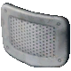
応急ガーゼ眼帯 from不測の事態 or 戦国眼帯 from 仇討 provides 1 built-in stack. Target an enemy 部位 in battle. - After Chapter 5, buy 偽りなき真心堂 Light armor for innate 潜在力アップ and
 トレジャーセンサー.
トレジャーセンサー.
- Branch from フォーサー into ブラストフェンサー while keeping エーテル ロングソード and デュアルガン.
- Unlock バトルフェンサー at ブラストフェンサー Rank 7 and raise it to Lv. 5 for 1.3x melee damage and accuracy during an オーラ. Reaching Rank 10 unlocks
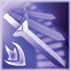
ソードアーツ. - Unlock スピードギミック at ギャラクシーナイト Rank 5 and raise it to Lv. 5 for 50% melee Art cooldown reduction in melee combos. Optionally continue to Rank 10 for
 心機一体.
心機一体. - Switch back to ドリフター permanently for 5 Skill Slots.
Endgame Loadout
Once all five stages are complete and your Signature Arts are unlocked, Cross can maintain permanent フェイクボディ evasion inside Infinite O.C.ギア while landing multi-million-damage finishers. Use the palette and rotation below to assemble your final ground bar and choose between Potential or Melee Attack scaling.
Arts Palette (Lv. 5)
- Open with ゴーストウォーカー and refresh it whenever フェイクボディ stacks run low.
- Cast アグレッシブモード at 1,000 TP in standard fights, or trigger O.C.ギア at 3,000 TP before casting アグレッシブモード against bosses.
- Build the O.C.ギア hit counter with Green-to-Yellow and Green-to-Orange chains: クロスリロード -> ゼロゼロ -> クロスリロード -> 真・旋風刃 -> ブレイドサイクロン.
- Lock onto an enemy 部位 and fire 桜花乱舞 or ヘラクレスブロウ on Secondary or Ternary Cooldown.
 桜花乱舞 unlocks after Chapter 10, costs 1,000 TP, and ignores attribute resistances. Slot マインドシーク in Skill Slot 5 and stack
桜花乱舞 unlocks after Chapter 10, costs 1,000 TP, and ignores attribute resistances. Slot マインドシーク in Skill Slot 5 and stack  潜在力アップ XX and
潜在力アップ XX and  潜在力ブースト XX on armor.
潜在力ブースト XX on armor.
ヘラクレスブロウ unlocks in Chapter 13 Act 2, costs 0 TP, and scales off  格闘力 and Weapon Attack. Slot マッスルアーム in Skill Slot 5 and stack
格闘力 and Weapon Attack. Slot マッスルアーム in Skill Slot 5 and stack  格闘力アップ XX on armor.
格闘力アップ XX on armor.
Quick Reference
When equipping Cross at the Barracks or crafting  デバイス at the AM Terminal, use these compact lookup cards to verify every final Skill slot, Signature Art unlock mission, and Level 60 equipment piece at a glance.
デバイス at the AM Terminal, use these compact lookup cards to verify every final Skill slot, Signature Art unlock mission, and Level 60 equipment piece at a glance.
Skills (Lv. 5)
| Done | Slot | Skill | Unlock | Effect |
|---|---|---|---|---|
| 1 | サイシーカー Rk 10 | 2.5x エーテル damage, intact parts | ||
| 2 | バトルフェンサー | ブラストフェンサー Rk 7 | 1.3x melee damage & accuracy in オーラ | |
| 3 | ダブルアクセル | エリートプランナー Rk 10 | +50% Secondary/Ternary recast speed | |
| 4 | ギャラクシーナイト Rk 5 | 50% melee cooldown cut in combos | ||
| 5 | マインドシーク / マッスルアーム / ヤマトソウル | フォーサー Rk 2 / |
+20% |
Signature Arts
| Done | Timing | Affinity Mission | Art | Replaces |
|---|---|---|---|---|
| Post-Ch. 5 | ||||
| Post-Ch. 8 | ライジングブレイド | |||
| Post-Ch. 10, Lv. 41+ | ||||
| Post-Ch. 11, Lv. 46+ | ||||
| Ch. 13 Act 2, Lv. 55+ | ヘラクレスブロウ |
Lv. 60 Gear
| Done | Slot | Item | Traits & Augments |
|---|---|---|---|
| Melee | 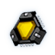 攻撃力アップ + 2x-3x |
||
| Ranged | ウルトラネビュラ / 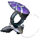 ウルトラネビュラII |
||
| Head | 戦国眼帯 / 覇王の眼帯 | Innate |
|
| Armor |
Alternatives
Because  インサイドブレイカー multiplies all エーテル damage regardless of weapon type, you can swap off ロングソード whenever you want a fresh combat feel while keeping your full 6.25x damage core. Both setups below reuse the same
インサイドブレイカー multiplies all エーテル damage regardless of weapon type, you can swap off ロングソード whenever you want a fresh combat feel while keeping your full 6.25x damage core. Both setups below reuse the same  パーツクラッシャー augments you already crafted.
パーツクラッシャー augments you already crafted.
Uses an エーテル  フォトンセイバー mastered at ギャラクシーナイト Rank 10 for rapid melee combo chains.
フォトンセイバー mastered at ギャラクシーナイト Rank 10 for rapid melee combo chains.
- Palette uses ゴーストウォーカー, クロスリロード, ゼロゼロ,
 スピリットチェンジ, エクシードスラッシュ,
スピリットチェンジ, エクシードスラッシュ, 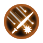
流星剣, 流星輪舞, and スターライトビート. - Skills use インサイドブレイカー, バトルフェンサー, スピードギミック, ダブルアクセル, and ソードアーツ.
Pairs a メレデス＆コー エーテル レイガン with  ナイフ buffs for ranged AoE bursts.
ナイフ buffs for ranged AoE bursts.
- Palette uses
 フルスペック,
フルスペック,  ラウンドリカバリー,
ラウンドリカバリー,  エナジーポイント, ノワールバタフライ, アナザーブラスト, イーサーブラスト,
エナジーポイント, ノワールバタフライ, アナザーブラスト, イーサーブラスト,  ビームボンバー, and スプラッシュブラスト.
ビームボンバー, and スプラッシュブラスト. - Skills use インサイドブレイカー,
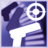
ガンコンボ, ダブルアクセル, マインドシーク, and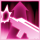
バレットアップ.